One-Sided Limits#
Discussion & Definitions#
One-Sided Limits are the same as limits except that we only care about approaching the limit point from one side, either the left or the right. As with most definitions in the precise language of mathematics the set up is sometimes a bit lengthy. All we are saying here is that if we are taking the limit from the left at \(x = a\) then the function needs to be defined to the left of a. Similarly with the limit from the right. For example, we would not talk about the limit from the left of \(f(x) = \sqrt{x}\) at \(x = 0\) since the function is undefined (not real in this case) to the left of \(x = 0\). This is still an intuitive definition of a one-sided limit since we are using some vague terms.
Definition: Limit from the Left
Let \(f(x)\) be a function defined at all values in an open interval \((c, a)\) where \(c < a\). If the values of the function \(f(x)\) approach the real number L as the values of x approach the number a, with \(x < a\), then we say that the limit of f(x) as x approaches a from the left is L. That is, as x gets closer to a and \(x < a\), \(f(x)\) gets closer to L. Symbolically we write
Definition: Limit from the Right
Let \(f(x)\) be a function defined at all values in an open interval \((a, c)\) where \(c > a\). If the values of the function \(f(x)\) approach the real number L as the values of x approach the number a, with \(x > a\), then we say that the limit of f(x) as x approaches a from the right is L. That is, as x gets closer to a and \(x > a\), \(f(x)\) gets closer to L. Symbolically we write
Another way to say the limit from the left is the limit from below and another way to say the limit from the right is the limit from above.
Comparing the definitions of one-sided limits and the definition of the limit we get a relative obvious theorem.
Theorem: One-Sided to Two-Sided Limits
Let \(f(x)\) be a function defined at all values in an open interval containing a, with the possible exception of a itself, and let L be a real number. Then,
Another consequence of this theorem is that if either of the one-sided limits does not exist then the two-sided limit does not exist either.
Example: \(\lim_{x \to 2} x^{3} - 5 x^{2} + x + 3\)#
Numerical Approach#
For a numerical approach we take values for x that get closer to 2, from each side separately, evaluate the function at all these using a calculator or computer, and see if the corresponding functional values are tending toward a single value. Making a chart of these values is below,
From the second column of values it appears that the functional values are getting closer to \(-7\), so we would say,
From the second column of values it appears that the functional values are getting closer to \(-7\), so we would say,
Applying our theorem, since
we can say that the two-sided limit exists and
Graphical Approach#
For a graphical approach we plot the function using a calculator or computer making sure the limit point of 2 is visible in the domain.
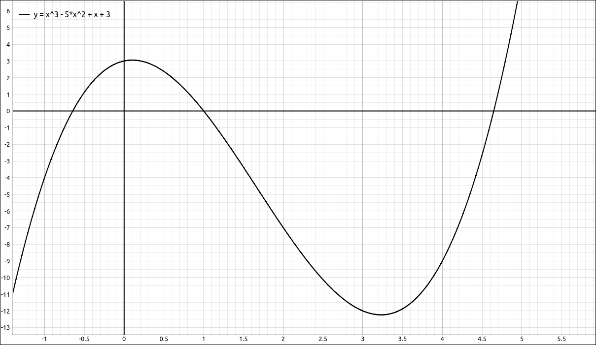
\(f(x) = x^{3} - 5 x^{2} + x + 3 = -7\)#
Following the curve around the x value of 2, concentrating on each side of \(x = 2\) respectively, we notice that the corresponding y values appear to be close to \(-7\) we would again say,
and hence by the theorem,
GeoGebra#
Numerical Approach#
Input the function, syntax is below, this should come into GeoGebra as
f(x)x^3-5 x^2+x+3Open the spreadsheet tool,
Main Menu > View > Spreadsheet.Input the x values in the A column.
In the
B1cell inputf(A1). This will substitute theA1value into the function and evaluate it.Select
B1, copy it either with a right click and the popup menu or keyboard shortcut.Select
B2down to the last row of x values.Paste either with a right click and the popup menu or keyboard shortcut. This will evaluate the function at each of the values in column
A.
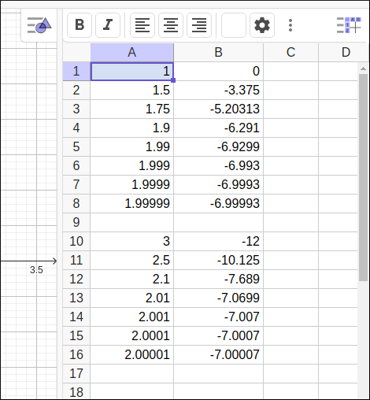
Spreadsheet values for \(f(x) = x^{3} - 5 x^{2} + x + 3 = -7\)#
From the values we come to the conclusions,
and by the theorem,
Graphical Approach#
Input the function, syntax is below, this should come into GeoGebra as
f(x)x^3-5 x^2+x+3GeoGebra will automatically graph the function.
Using the Shift-Click and Drag on the axes and repositioning, zoom to a view that still contains \(x = 2\) and is nicely readable.
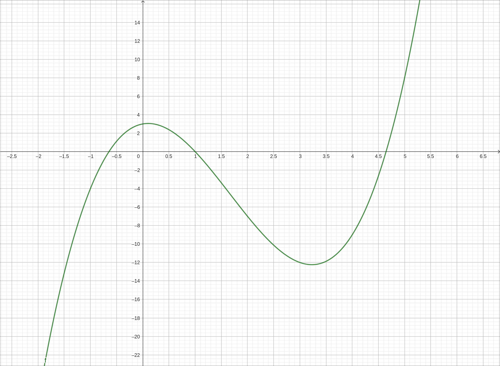
\(f(x) = x^{3} - 5 x^{2} + x + 3 = -7\)#
From the graph we come to the conclusions,
and by the theorem,
Algebraic Approach#
Although we have not yet discussed limit laws and methods we can let the software do that work for us. GeoGebra has a built in computer algebra system that does exact mathematics.
Input the function, syntax is below, this should come into GeoGebra as
f(x)x^3-5 x^2+x+3In the next input cell start typing
limit, after three characters or so an autocompletion menu will appear withLimitBelowas one of the options, select it, the parameters for this function are a function and a value, inputffor the function, hit tab, then input 2 for the value. The cell will display the limit command and the value of \(-7\). Hence,
In the next input cell start typing
limit, after three characters or so an autocompletion menu will appear withLimitAboveas one of the options, select it, the parameters for this function are a function and a value, inputffor the function, hit tab, then input 2 for the value. The cell will display the limit command and the value of \(-7\). Hence,
and again by our theorem,
CLAE#
Numerical Approach#
Input the function, syntax is below, you can copy this and paste it into the CAS input bar with a right click popup menu or keyboard shortcut. Note that CLAE does not automatically assign function names to inputs.
f(x):=x^3-5*x^2+x+3Click the Spreadsheet tab.
Input the x values in the A column.
In the
B1cell inputf(A1). This will substituteA1into the function and evaluate it.Select
B1, copy its formula withEdit > Copy Formulasor the corresponding toolbar button.Select
B2down to the last row of x values.Paste with either
Edit > Pasteor the corresponding toolbar button.
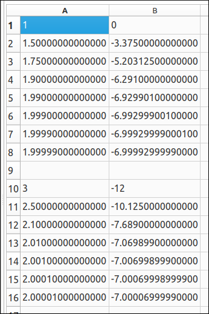
Spreadsheet values for \(f(x) = x^{3} - 5 x^{2} + x + 3 = -7\)#
From the graph we come to the conclusions,
and by the theorem,
Graphical Approach#
Input the function, syntax is below, you can copy this and paste it into the CAS input bar with a right click popup menu or keyboard shortcut. Note that CLAE does not automatically assign function names to inputs.
f(x):=x^3-5*x^2+x+3Click the 2-D Graphs tab.
Click and drag the expression from the CAS workspace to the graph, or graphics manager. This will plot the function. Use the right-click and drag on the axes and repositioning, zoom to a view that still contains \(x = 2\) and is nicely readable.
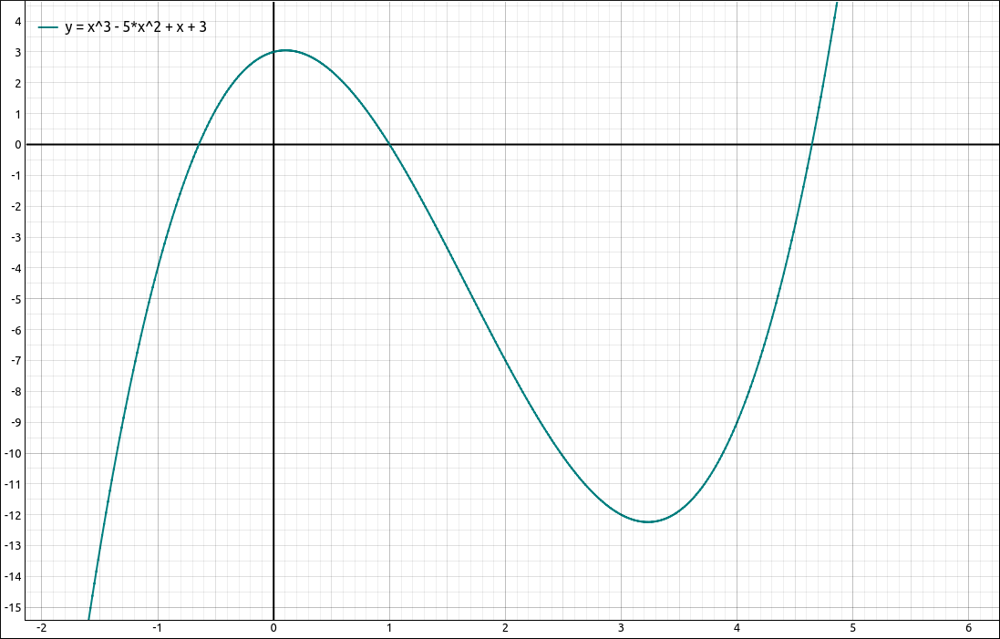
\(f(x) = x^{3} - 5 x^{2} + x + 3 = -7\)#
From the graph we come to the conclusions,
and by the theorem,
Algebraic Approach#
Although we have not yet discussed limit laws and methods we can let the software do that work for us. CLAE has a built in computer algebra system that does exact mathematics.
Input the function, syntax is below. Note we do not need the
f(x)here but it will work equally well if we include it.x^3-5*x^2+x+3- Select the expression and then select
Calculus > Limit, a dialog box will appear, here are the settings. Variable:
x.Limit Point: 2.
Direction: Left
Leave the variable properties as they are.
Select OK
- Select the expression and then select
The CAS workspace will show the limit in the description and \(-7\) as the value.
- Select the expression and then select
Calculus > Limit, a dialog box will appear, here are the settings. Variable:
x.Limit Point: 2.
Direction: Right
Leave the variable properties as they are.
Select OK
- Select the expression and then select
The CAS workspace will show the limit in the description and \(-7\) as the value.
Hence we would conclude,
and by the theorem,
Maxima#
Numerical Approach#
Creating tables in Maxima is not the easiest thing to do and requires a little programming. You can simply evaluate the function at each x value one at a time to obtain the same information or try using a Maxima for loop.
Clear any variable names you are using.
kill(f,x)Input the function, syntax is below,
f(x):=x^3-5*x^2+x+3Now either evaluate
f(2.1),f(2.01),f(2.001), and so on or do the following loop.(print("x", "f"), for i:1 thru 10 do (x: 2+1.0/(10^i), L: f(x)*1.0, print(x,L)) );
x f 2.1 -7.689 2.01 -7.069898999999998 2.001 -7.006998999 2.0001 -7.000699989999001 2.00001 -7.000069999899999 2.000001 -7.000006999998998 2.0000001 -7.000000699999987 2.00000001 -7.000000069999999 2.000000001 -7.000000007000001 2.0000000001 -7.0000000007
Now either evaluate
f(1.9),f(1.99),f(1.999), and so on or do the following loop.(print("x", "f"), for i:1 thru 10 do (x: 2-1.0/(10^i), L: f(x)*1.0, print(x,L)) );
x f 1.9 -6.291000000000002 1.99 -6.929900999999999 1.999 -6.992999000999999 1.9999 -6.999299990001001 1.99999 -6.999929999900001 1.999999 -6.999992999999002 1.9999999 -6.99999929999999 1.99999999 -6.999999930000001 1.999999999 -6.999999992999999 1.9999999999 -6.9999999993
Hence we would conclude,
and by the theorem,
Graphical Approach#
Clear any variable names you are using.
kill(f,x)Input the function, syntax is below,
f(x):=x^3-5*x^2+x+3- Select
Plot > Plot 2D, a dialog box will appear, here are the settings. Expression:
f(x).Variable:
xfrom \(-2\) to 6.Variable:
yfrom \(-15\) to 5.Leave the rest of the options as they are.
Select OK
- Select
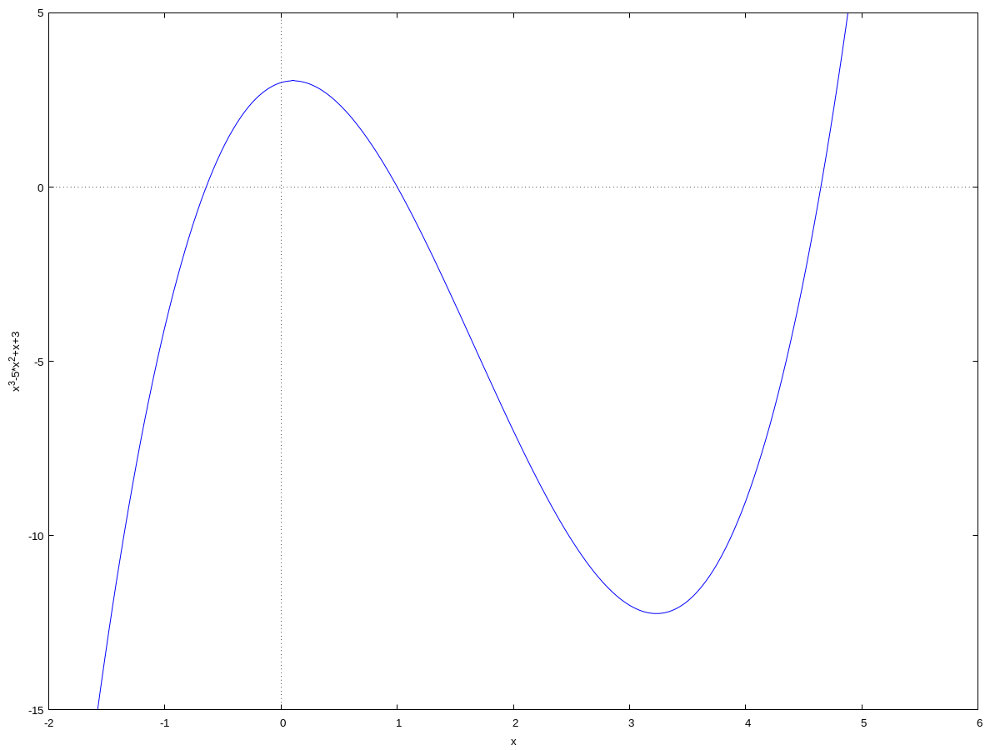
\(f(x) = x^{3} - 5 x^{2} + x + 3 = -7\)#
From the above graph we conclude,
and by the theorem,
Note
The menu options in wxMaxima help the user set up the Maxima command and loads the command into the workspace. The user can equally type in the command into the workspace.
wxplot2d([f(x)], [x,-2,6], [y,-15,5])
Here the [f(x)] is the list of functions to plot, [x,-2,6] is the bounds on x and [y,-15,5] is the bounds on y.
Graphs in Maxima are not as easy to manipulate as they are in GeoGebra or CLAE, so the options need to be specified in the command. If the image is not what is desired the user can manipulate the options in the command line instead of redoing the full inputs from the dialog.
Algebraic Approach#
Clear any variable names you are using.
kill(f,x)Input the function, syntax is below,
f(x):=x^3-5*x^2+x+3- Select
Calculus > Find Limit, a dialog box will appear, here are the settings. Expression:
f(x).Variable:
xPoint: 2.
Direction: left
Leave the rest of the options as they are.
Select OK
- Select
The result will be \(-7\).
- Select
Calculus > Find Limit, a dialog box will appear, here are the settings. Expression:
f(x).Variable:
xPoint: 2.
Direction: right
Leave the rest of the options as they are.
Select OK
- Select
The result will be \(-7\).
Hence we would conclude,
and by the theorem,
Note
The command for a one-sided limit is fairly simple, the above limits would be,
limit(f(x), x, 2, minus)
and
limit(f(x), x, 2, plus)
respectively.
Example: \(\lim_{x \to 0} \frac{\sin(x)}{x}\)#
Numerical Approach#
For a numerical approach we take values for x that get closer to 0, from each side independently, evaluate the function at all these using a calculator or computer, and see if the corresponding functional values are tending toward a single value. Making chart of these values is below,
From the values we would conclude,
From the values we would conclude,
and hence from our theorem,
Graphical Approach#
For a graphical approach we plot the function using a calculator or computer making sure the limit point of 0 is visible in the domain.
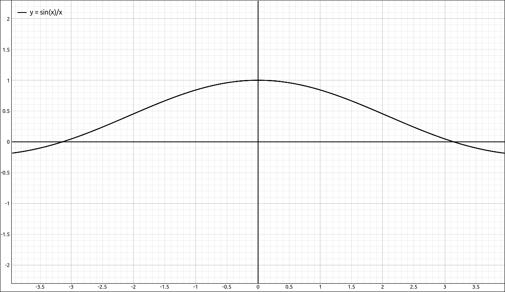
\(f(x) = \frac{\sin(x)}{x}\)#
Following the curve around the x value of 0 and noticing that the corresponding y values appear to be close to 1 we would again say,
and from our theorem,
Note
In this case the limit is not the same as substituting in the limit point, for \(\frac{\sin(0)}{0}\) is undefined. Also note that graphs from calculators and computers can be misleading. The curve, in reality, has a hole in it at \(x = 0\), most software packages will not display this. As far as the limits are concerned, remember we are considering the function close to \(x = 0\) and not at \(x = 0\).

\(f(x) = \frac{\sin(x)}{x}\)#
GeoGebra#
Input the function,
sin(x)/xFollow the process outlined in the first example to determine the one-sided limits of this function as \(x \to 0^-\) and \(x \to 0^+\). The spreadsheet should produce values close to the tables above, the image should look like the following, and the above and below limit commands should both produce 1.
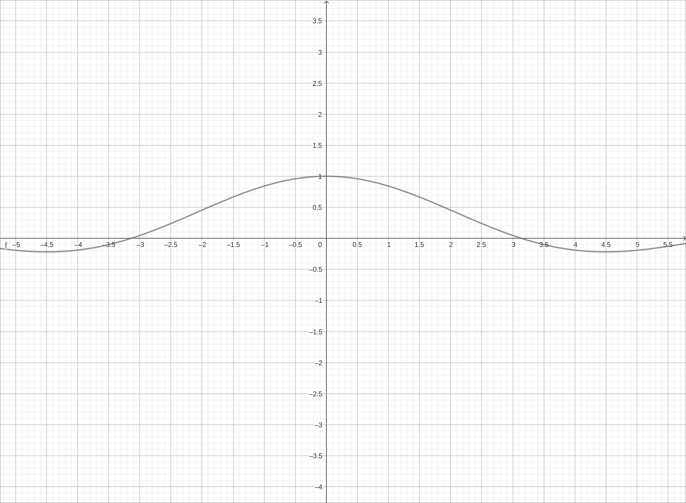
\(f(x) = \frac{\sin(x)}{x}\)#
Each method should give us the conclusion,
and from our theorem,
CLAE#
If there are entries in the CAS workspace you may want to clear the workspace. Note that CLAE does not allow you to redefine a function name, so either clear the workspace or change the name of the function in the next step.
Input the function,
f(x):=sin(x)/xFollow the process outlined in the first example to determine the one-sided limits of this function as \(x \to 0^-\) and \(x \to 0^+\). The spreadsheet should produce values close to the tables above, the image should look like the following, and the left and right limits should both produce 1.
\(f(x) = \frac{\sin(x)}{x}\)#
Each method should give us the conclusion,
and from our theorem,
Maxima#
Clear any variable names you are using.
kill(f,x)Input the function, syntax is below,
f(x):=sin(x)/xFollow the process outlined in the first example to determine the one-sided limits of this function as \(x \to 0^-\) and \(x \to 0^+\). The table from the for loop should produce values close to the tables above, the image should look like the following, and the left and right limit commands should produce 1.
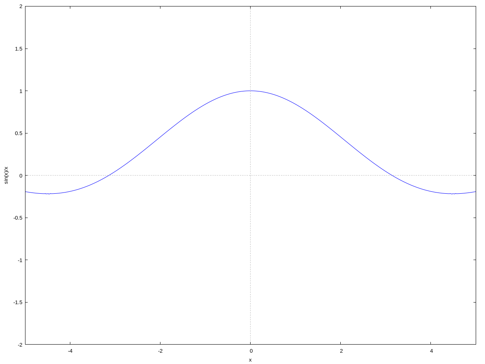
\(f(x) = \frac{\sin(x)}{x}\)#
Each method should give us the conclusion,
and from our theorem,
Example: \(\lim_{x \to 3} \frac{\left|{x^{2} - 9}\right|}{x - 3}\)#
Numerical Approach#
Creating tables of values as we have done before, we get the following,
From the functional values we would conclude,
From the functional values we would conclude,
In this case both one-sided limits exist but since they are not equal to the same value the contrapositive statement of the theorem implies that,
Graphical Approach#
Graphing the function, we get with CLAE, and a similar image with Maxima,
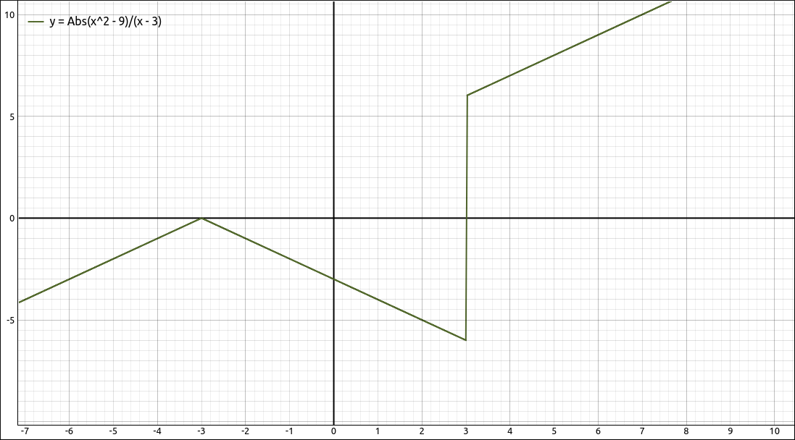
\(f(x) = \frac{\left|{x^{2} - 9}\right|}{x - 3}\)#
and with GeoGebra,
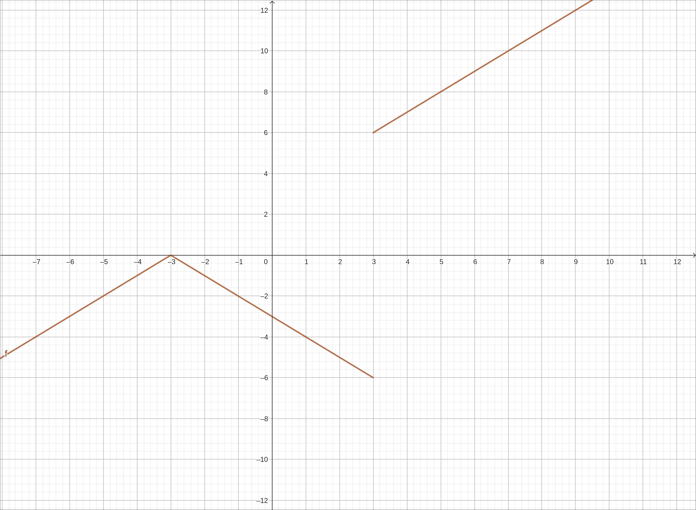
\(f(x) = \frac{\left|{x^{2} - 9}\right|}{x - 3}\)#
Note that GeoGebra detected the jump at \(x = 3\) and did not connect the two portions of the graph, whereas CLAE and Maxima connected them. The “correct” graph is the one produced by GeoGebra. Note that it is more common in mathematical software packages and graphing calculators for the two portions to be connected and leaves it to the user to realize that the vertical line does not belong there. In general, with graphing software, always question vertical lines, sometimes they belong there and other times they are artifacts.
From either image we get the same conclusions,
and by our theorem,
GeoGebra#
Input the function, either of the following expressions will work,
abs(x^2-9)/(x-3)|x^2-9|/(x-3)Follow the process outlined in the first example to determine the one-sided limits of this function at \(x \to 3\). The spreadsheet should produce values close to the tables above and the image should look like the following. The big difference is with the above and below limit commands we get 6 and \(-6\) respectively.
\(f(x) = \frac{\left|{x^{2} - 9}\right|}{x - 3}\)#
Each method should give us the conclusion,
and by our theorem,
CLAE#
If there are entries in the CAS workspace you may want to clear the workspace. Note that CLAE does not allow you to redefine a function name, so either clear the workspace or change the name of the function in the next step.
Input the function, either of the two inputs will work.
f(x):=Abs(x^2 - 9)/(x - 3)f(x):=abs(x^2 - 9)/(x - 3)Follow the process outlined in the first example to determine the one-sided limits of this function at \(x \to 3\). The spreadsheet should produce values close to the tables above and the image should look like the following. The left and right limit commands should produce \(-6\) and 6 respectively.
\(f(x) = \frac{\left|{x^{2} - 9}\right|}{x - 3}\)#
Each method should give us the conclusion,
and by our theorem,
Maxima#
Clear any variable names you are using.
kill(f,x)Input the function, syntax is below,
f(x):=abs(x^2 - 9)/(x - 3)Follow the process outlined in the first example to determine the one-sided limits of this function at \(x \to 3\). The table from the for loop should produce values close to the tables above and the image should look like the following. When we use the left and right limit commands we get \(-6\) and 6 respectively.
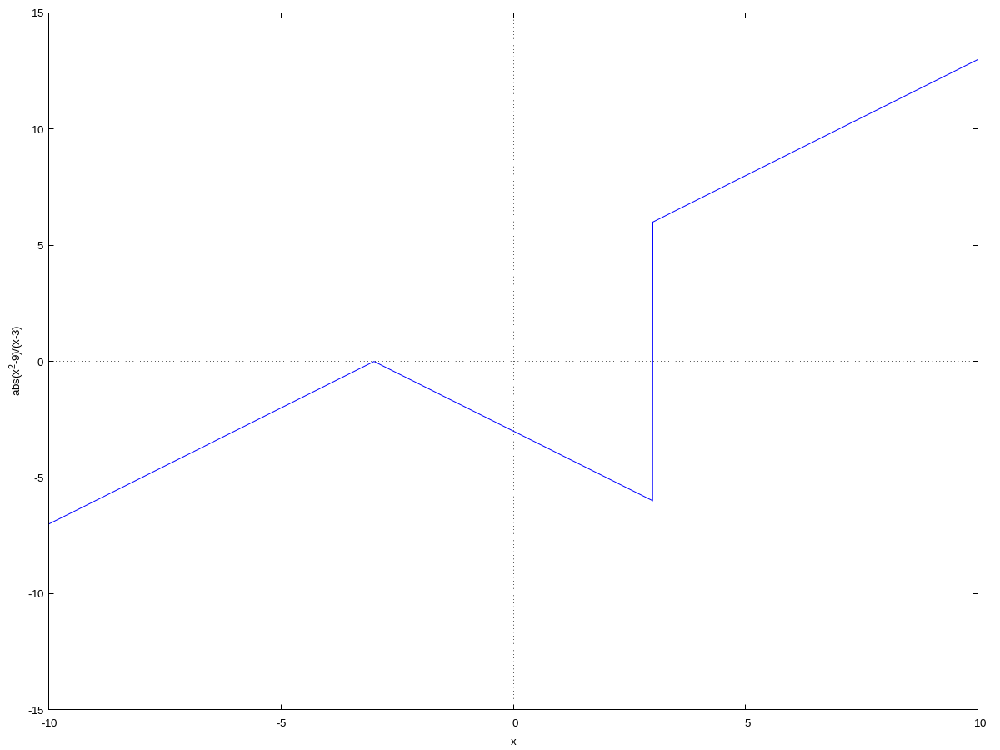
\(f(x) = \frac{\left|{x^{2} - 9}\right|}{x - 3}\)#
Each method should give us the conclusion,
and by our theorem,
Example: \(\lim_{x \to 0} \sin\left( \frac{1}{x} \right)\)#
Numerical Approach#
Creating the tables as we have done before.
Since the functional values are jumping around and not appearing to be getting close to any single number we would conclude,
As with the right sided limit the functional values here are also jumping around and not appearing to be getting close to any single number we would conclude,
Since the one-sided limits do not exist, really we only one not to exist, the two-sided limit does not exist,
As noted before, there are cases where a function can act erratically in our numeric testing values and settle in if we get closer. Although this does not happen here, it is possible.
Graphical Approach#
Graphing the function gives us the following image.
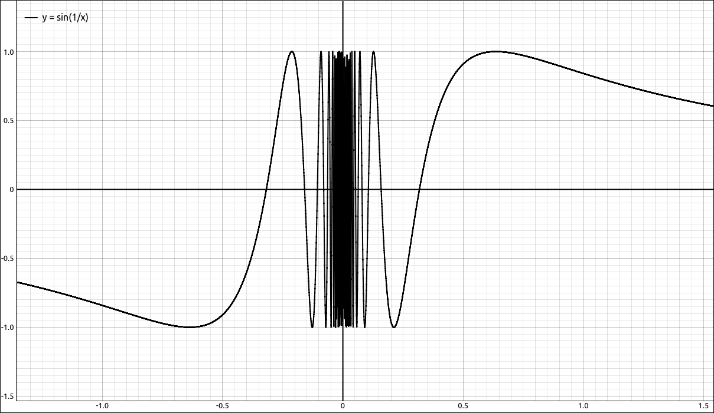
\(f(x) = \sin\left( \frac{1}{x} \right)\)#
This matches our suspicions from the numeric approach but is more informative. It appears that the functional values oscillate infinitely often as we get closer to 0. As with the above example, this means that there is no single value L that the functional values are getting close to from either side and hence the limits do not exist.
and hence,
If we look at this logically we should come to the same conclusion. As the values od x get small, the values of \(\frac{1}{x}\) get large, in fact grow without bound. Taking the \(\sin(x)\) will periodically oscillate between \(-1\) and 1, hence infinitely often.
GeoGebra#
Input the function,
sin(1/x)Follow the process outlined in the first example to determine the one-sided limits of this function at \(x \to 0\). The spreadsheet should produce values close to the tables above and the image should look like the following. The big difference is with the above and below limit commands will produce
?.
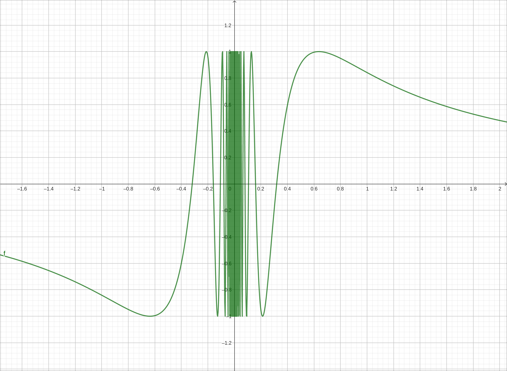
\(f(x) = \sin\left( \frac{1}{x} \right)\)#
Each method should give us the conclusions,
and hence,
CLAE#
If there are entries in the CAS workspace you may want to clear the workspace. Note that CLAE does not allow you to redefine a function name, so either clear the workspace or change the name of the function in the next step.
Input the function,
f(x):=sin(1/x)Follow the process outlined in the first example to determine the one-sided limits of this function at \(x \to 0\). The spreadsheet should produce values close to the tables above and the image should look like the following, with the number of points plotted increased. The left and right limit commands here produce the following output, \(\left\langle -1, 1\right\rangle\). This is its way of denoting the oscillation between \(-1\) and 1. This still shows that there is no single number L, hence the limits do not exist.
\(f(x) = \sin\left( \frac{1}{x} \right)\)#
Each method should give us the conclusion,
and hence,
Maxima#
Clear any variable names you are using.
kill(f,x)Input the function, syntax is below,
f(x):=sin(1/x)Follow the process outlined in the first example to determine the one-sided limits of this function at \(x \to 0\). The table from the for loop should produce values close to the tables above and the image should look like the following. When we use the left and right limit commands we get the result
ind, short for indeterminate.
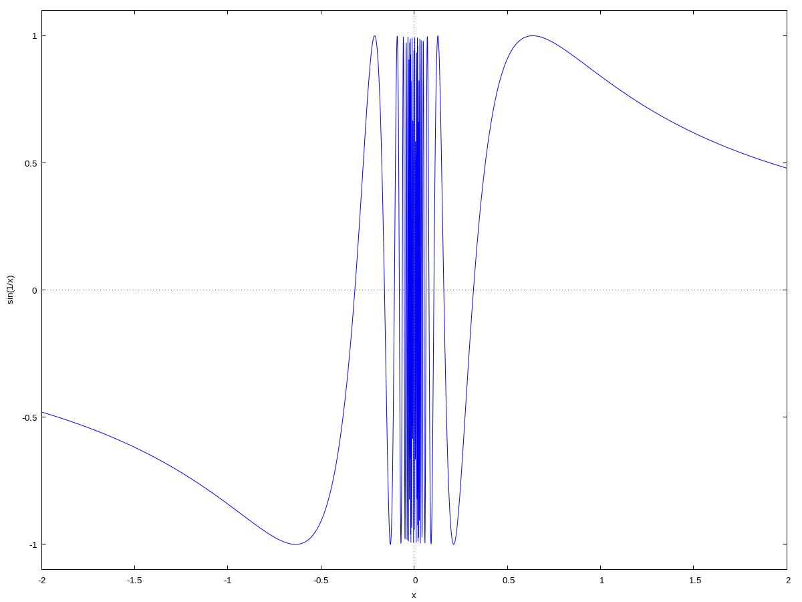
\(f(x) = \sin\left( \frac{1}{x} \right)\)#
Each method should give us the conclusion,
and hence,